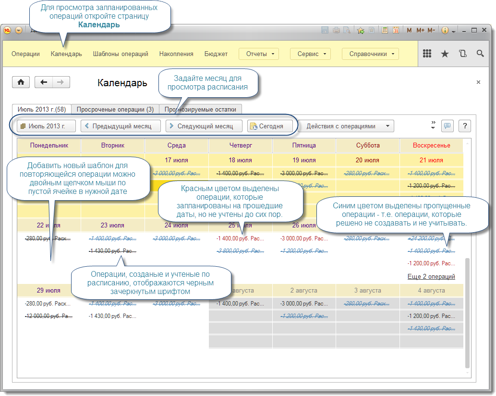
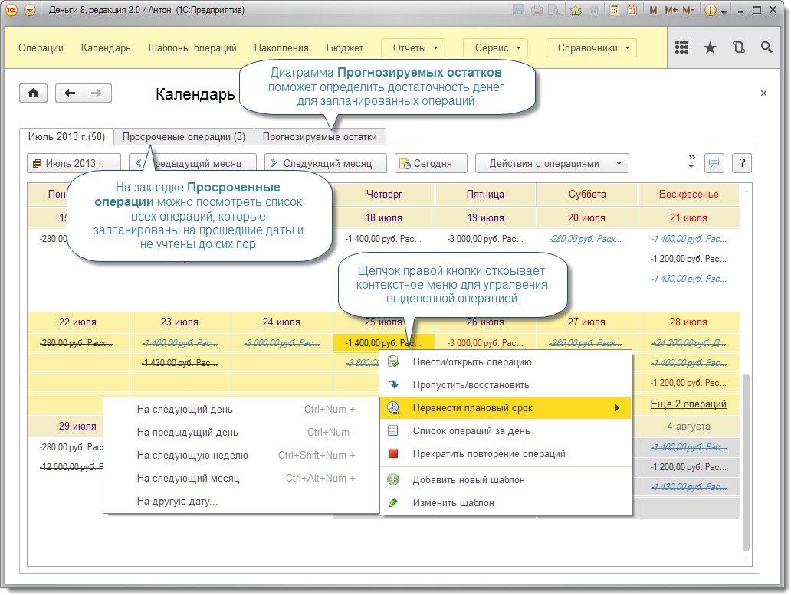

Страница "Календарь"
Страница Календарь предназначена для наглядного и удобного управления операциями, ввод которых запланирован в шаблонах.

Первая закладка этой страницы отображает запланированные операции в месячном календаре. Цвет и шрифт операции зависит от ее состояния:
- черный цвет, обычный шрифт - запланированная на будущее операция;
- черный цвет, зачеркнутый шрифт - выполненная (учтенная) операция;
- голубой цвет, зачеркнутый шрифт - пропущенная операция, которую не нужно учитывать;
- красный цвет - просроченная операция.
Выделите в календаре нужную операцию и с помощью контекстного меню или с помощью меню Действия с операциями выполните требуемое действие:
Нажатие Enter на операции аналогично команде Ввести/открыть операцию.

Закладка Просроченные операции содержит список всех операций, плановые сроки которых меньше текущей даты. С помощью команд этого списка запланированные операции так же могут быть выполнены, пропущены, перенесены на другой день и т.д.
Закладка Прогнозируемые остатки позволяет наглядно оценить достаточность денег для выполнения всех запланированных расходов.